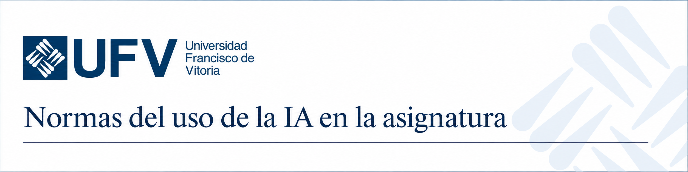

Universidad Francisco de Vitoria
Guía práctica para decidir, rediseñar y acompañar
1 · Guías
Tres documentos para comprender, orientar y aplicar la IA con criterio
Marco conceptual
Explica qué es la IA, qué puede hacer y en qué se diferencia de la inteligencia humana.
Abrir guíaGuía de buen uso
Ofrece principios para usar la IA con verdad, responsabilidad, autoría y criterio propio.
Abrir guíaBuenas prácticas docentes
Aterriza la IA en la docencia con ejemplos, límites y orientaciones pedagógicas.
Abrir guíaLas tres guías ayudan a comprender la IA, usarla con responsabilidad y aplicarla al aprendizaje sin perder el sentido formativo ni la huella humana del alumno.
Fuentes: Universidad Francisco de Vitoria. Marco conceptual de la IA en el ámbito académico (2026); Guía de buen uso de la IA en los estudios de la UFV (2024); Buenas prácticas docentes en el uso de la IA (2024).
2 · Antes de cambiar nada
Antes de rediseñar una actividad o introducir la IA, conviene revisar qué aprendizaje se quiere proteger o reforzar, qué evidencias se necesitan y qué papel debe desempeñar el alumno.
3 · Aspectos básicos
Una escala orientativa para comunicar al estudiante cuánto puede intervenir la IA en una tarea y qué responsabilidad conserva el alumno.
La tarea se realiza sin asistencia de IA.
Sirve paraComprobar comprensión, memoria, razonamiento propio o desempeño personal.
La IA puede ayudar antes de la entrega final.
Sirve paraLluvia de ideas, esquemas, preguntas iniciales o planificación.
La IA acompaña partes del proceso.
Sirve paraRevisar, contrastar, mejorar borradores o recibir feedback inicial.
La IA puede utilizarse ampliamente en la tarea.
Sirve paraProyectos avanzados donde se evalúa el criterio de uso, no solo el producto.
La IA forma parte del diseño creativo o experimental.
Sirve paraInvestigar nuevos formatos, prototipos o soluciones con supervisión docente.
No se trata solo de permitir o prohibir IA, sino de hacer explícito qué papel tiene, qué debe demostrar el alumno y cómo se protege el aprendizaje.
Fuente: adaptación visual inspirada en la AI Assessment Scale de Perkins, Furze, Roe y MacVaugh. Véase Leon Furze, The AI Assessment Scale in Action.
Este es el texto que figura en la guía docente sobre el uso de la IA y que conviene comentar con el alumnado.
1. El régimen de uso de cualquier sistema o servicios de Inteligencia Artificial (IA) vendrá determinado por el criterio del profesor, pudiendo ser utilizada solo en la forma y supuestos en que así lo indique y, en todo caso, con sujeción a los siguientes principios:
2. En todo caso, el uso de sistemas o servicios de IA deberá respetar siempre y en todo momento los principios de uso responsable y ético que rigen en la universidad y que pueden consultarse en la Guía de Buen Uso de la Inteligencia Artificial en los Estudios de la UFV. Además, el profesor podrá recabar del alumno otro tipo de compromisos individuales cuando así lo estime necesario.
3. Sin perjuicio de lo anterior, en caso de duda sobre el uso ético y responsable de cualquier sistema o servicio de IA, el profesor podrá optar por la presentación oral de cualquier trabajo o entrega parcial solicitado al alumno, siendo esta la evaluación prevalente sobre cualquier otra prevista en la Guía Docente. En dicha defensa oral, el alumno deberá demostrar su conocimiento de la materia, justificando sus decisiones y el desarrollo de su trabajo.
Banner listo para colocar en la página de inicio de tu Canvas. Descárgalo y súbelo a tu asignatura.

Descargar banner para CanvasApóyate en los pilares y principios de la Guía de buen uso de la IA en los estudios de la UFV.
4 · Casos
Explora las fichas de aplicación. Filtra por el tipo de evaluación y nivel de uso de la IA. Se marca el nivel de complejidad para la elaboración de la herramienta.
Respuestas prácticas para tomar decisiones bien informadas, proteger la integridad académica y favorecer un aprendizaje más profundo. Si aún queda alguna duda, escribe a vitor.ia@ufv.es.
Referencias en formato APA 7.
Contacto
Si tras consultar esta guía tienes alguna pregunta sobre la evaluación en tiempos de la inteligencia artificial, escríbenos.
Escribir a vitor.ia@ufv.es{kind=link}